Verify a new Service version in your pipeline: a minimal example
Where to start
- Prerequisites: a Service, verification set up in AosCloud.
- Run it from your terminal: try it by hand, about 10 minutes, step by step.
- Add the job to your pipeline: the same steps in GitHub, after each upload.
Watch first
A new version of your Service goes to the test Units of your Verification Set first. AosCloud holds it there until someone approves or rejects it. This example does that from GitHub Actions: it waits for the version, runs the built-in checks (and your tests, when you add them), writes an HTML report, and approves or rejects the version with one AosCloud API call.
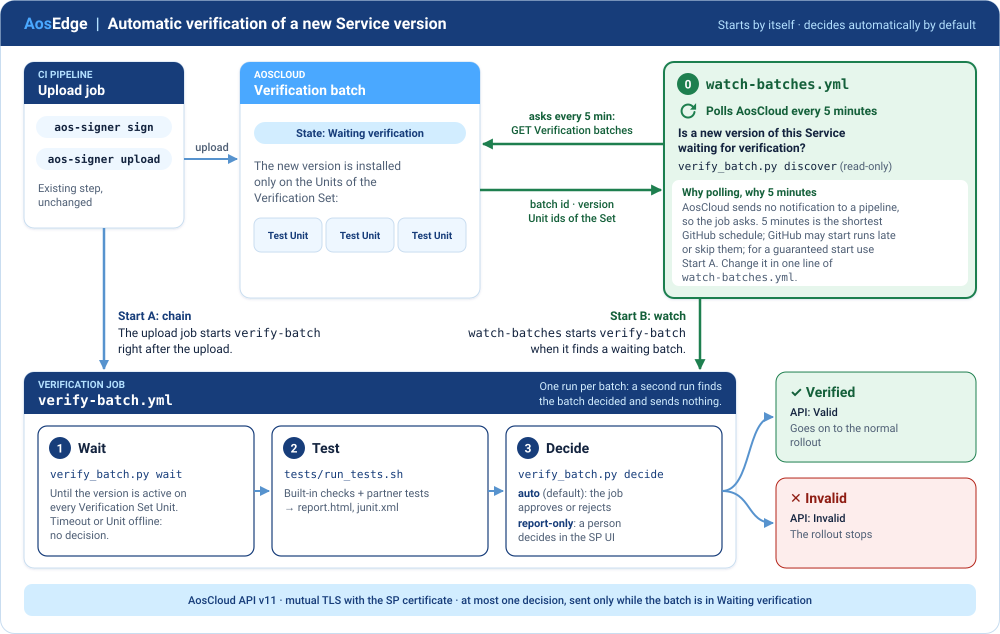
Tested end to end from a terminal on production AosCloud 6.1.97 on 30.10.2026, with the same three steps the job runs: upload → the version active on the test Unit in about 15 s → tests → approved → Verified.
How the pipeline knows it is time
AosCloud 6.1 and 6.2 send no notification to a pipeline; a webhook would replace the watch. So the pipeline asks, on a schedule, with the SP certificate alone. Nobody presses anything.
![1, your upload job uploads a version. 2, AosCloud makes a batch that waits. 3 and 4, the version goes to the test Units, and they report installed and active, or failed. 0, new: about every 10 minutes, best effort, the watch asks AosCloud whether a new version waits, and gets the batch id, the version and the Unit ids; it starts one verify-release run per batch; or your upload job starts it right after the upload. 5, wait checks each Unit. 6, the built-in checks and your tests run. 7, one PATCH approves or rejects, only if the batch still waits](docs/img/sequence.svg)
| Who | Tells whom | What | Where you see it |
|---|---|---|---|
| Your upload job | AosCloud | a new version | the job log; SP UI → Deployment bundles |
| AosCloud | the test Units of the Verification Set | install this version | SP UI → Verification batches: Waiting verification |
| A test Unit | AosCloud | installed, and active or failed | SP UI → Unit → Subjects & Services → Service Instances |
| AosCloud, when the watch asks | the watch | the batch id, the version, the Unit ids of the Set | the log of watch-verification; the title of the verify-release run |
| The verification job | AosCloud | one decision: approve or reject | the report; SP UI: Verified or Invalid |
- When to start, and which version: the highest version of your Service, if its batch waits.
- Which Set: the test Units are the Units of the Verification Set that have your Service.
- Which tests:
tests/run_tests.shin your repository: the built-in checks, then your tests. - Did the deployment reach the whole Set?
waitasks every test Unit: online, installed, with an active instance. One failed Unit rejects the version; a Unit that is offline or never gets it ends in a timeout and no decision.
Two automatic starts, no buttons:
- The chained start: your upload job calls the verification right after the upload, in the same workflow.
- The watch: it asks AosCloud itself and finds any upload, wherever it came from. GitHub runs a schedule on a best-effort basis, so the watch can be late.
Both end in the same verify-release, in one queue per version, and cannot double-decide: a second run waits for the first, finds the batch decided, and sends nothing.
Note: discover ran read-only on production 6.1.97 and on staging 6.2.31 on 04.11.2026, and the upload-to-decision steps ran on production on 30.10.2026. The scheduled watch itself has so far run only against a mock.
What is in this repository
Files: verify_batch.py (about 450 lines, Python 3.10+ and requests), tests/run_tests.sh (the built-in checks, then your tests) with tests/report.py (the HTML report) and tests/your_tests.sh.example, .github/workflows/watch-verification.yml (the watch), .github/workflows/verify-release.yml (the job) and examples/release-caller.yml. Copy them into the repository of your Service.
How to use this repository
- Prerequisites: a Service, verification set up in AosCloud, a version uploaded.
- Run it from your terminal: the whole story by hand, step by step, for a first try.
- Add the job to your pipeline: the GitHub workflow and its parameters.
- Your tests: what
tests/run_tests.shchecks, the report, and how to add your own tests. - Example checks: 12 scenarios we ran on production, step by step, if you have no tests yet.
- API reference with examples: every call, with
curl. - FAQ and tips.
Next → Prerequisites
Prerequisites
1. A Service that your pipeline already deploys (SP)
- The Service exists in AosCloud for your Service Provider (SP) account: SP UI → Services, or
POST services/ {title, codename, default_quotas}(services_create). - Note its Service id. The job finds the version by this id. It is the
idof the item with yourcodenameinGET services/?search=<codename>(find the Service id). - Your pipeline signs and uploads it with
aos-signer, using the SP user certificate (.p12).
2. Verification configured (OEM)
The OEM account does these steps once. The new version then goes to these Units first, and to no other Unit.
Create the Verification Set: a Unit Set with Verification set = YES, in the fleet of the test Units. OEM UI → Unit-sets → +, or
POST unit-sets/ {title, is_validation_set: true, fleet, description}(unit_sets_create).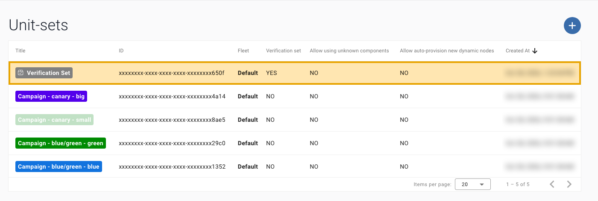
Add the test Units to it: Add unit, or
POST unit-sets/{id}/units/ {system_uids}(unit_sets_units_create). The Units must be provisioned and online.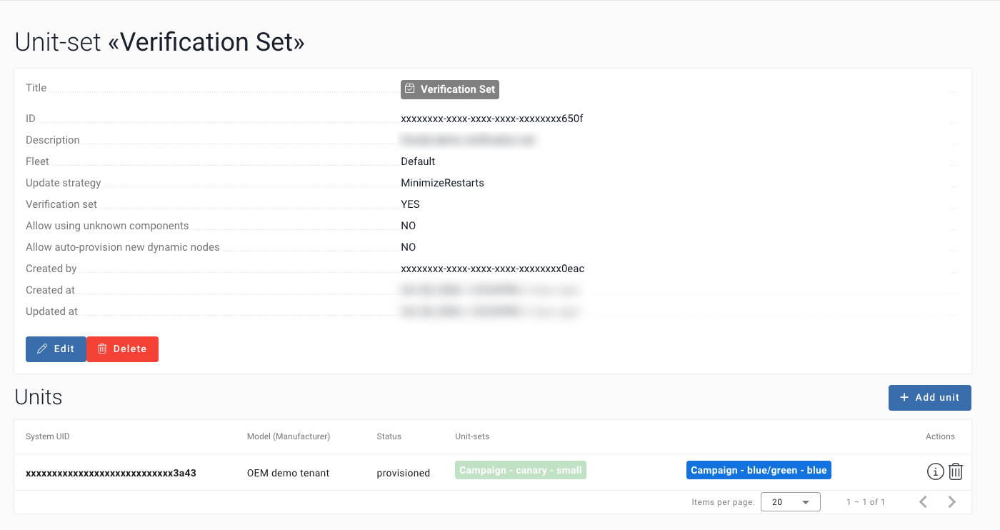
Create a Subject for the test Units: a group Subject, priority 0, with the test Units assigned.
POST subjects/ {label, is_group: true, priority: 0}(subjects_create), thenPOST subjects/{id}/units/ {system_uids}(subjects_units_create).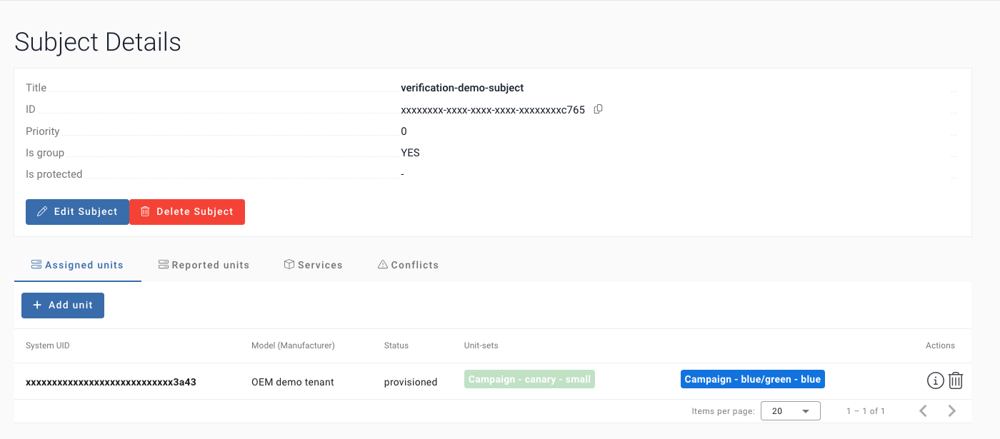
Give your Service to the Subject: Services tab → Add service, or
POST subjects/{id}/services/ {service_ids}(subjects_services_create). Without this link the version is never installed on the test Units.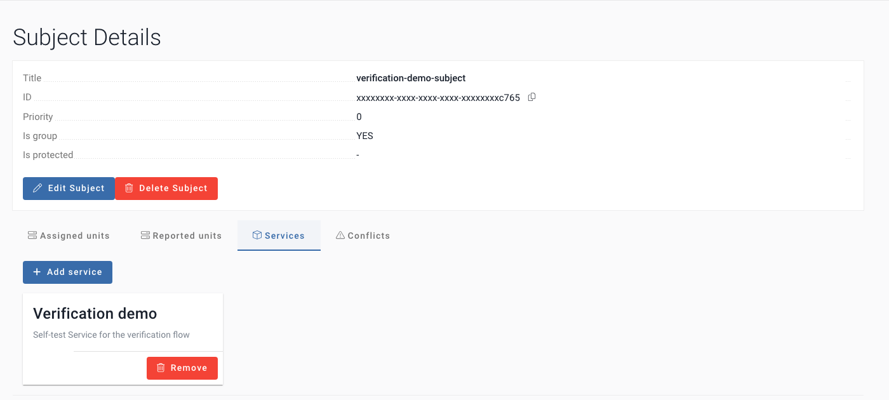
You do not need to give the job the ids of the test Units: with the SP certificate it reads them from each batch (which Units). The SP cannot read Unit Sets directly.
3. A version uploaded, so that a Verification batch exists (SP)
In the
config.yamlof the Service, these parameters matter:Parameter Why items[].identity.codenamethe codename of your Service items[].identity.id(optional)your Service id: the upload adds a version to that Service items[].versionthe new version. It must be higher than the last one and never uploaded before items[].images[].archInfo.architecturewhat the image is built for. The batch lists the architectures it needs an approval for: for example, amd64for an image built forany.decidesends one approval for eachpublish.tlsKeythe path of the SP .p12. Keep the file out of the repository- Run
aos-signer signandaos-signer uploadin the folder of the Service. SP UI → Deployment bundles: the version is Done. An Error such as "Item version … already exists" means that the version was reused: raise it.
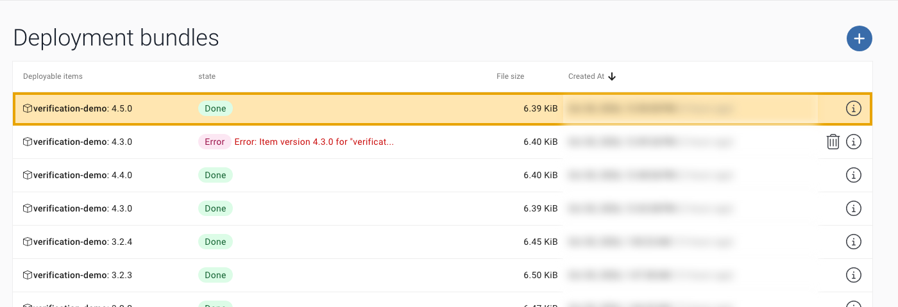
SP UI → Verification batches: AosCloud creates one batch per uploaded version. It waits for a decision, with no time limit: the API state is
Waiting_validation, and the UI shows Waiting verification.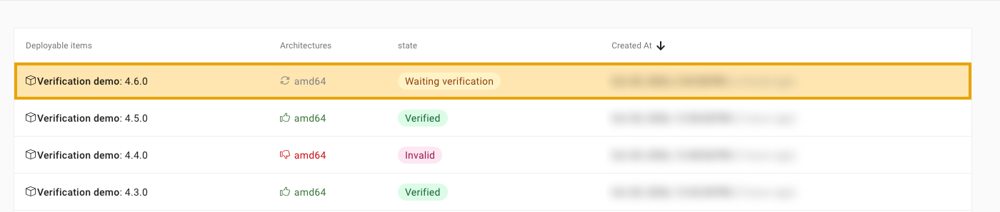
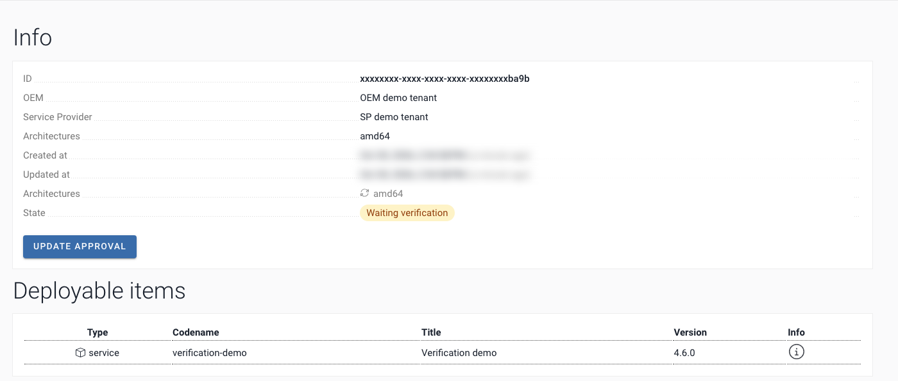
Next → Run it from your terminal
Run it from your terminal
One story, step by step: you upload a new version, the built-in checks run against it, you open the report and approve it. It is what the GitHub job does, by hand, so you can try it in about 10 minutes or find out why the job failed. Click Copy on each block and paste it into one terminal. You edit two lines (steps 3 and 4); everything else runs as it is. The outputs of steps 5, 7 and 9 come from production runs; ids are shortened to … plus 4 characters.
1. Get the files
Everything runs from the folder of this example.
macOS / Linux
unzip aos-verification-example.zip && cd aos-verification-exampleWindows (PowerShell)
Expand-Archive aos-verification-example.zip -DestinationPath .; cd aos-verification-exampleNote: unpacked it with a double click? Then only cd aos-verification-example.
2. Python
The example needs Python 3.10 or later and one package, requests, in a folder of its own (.venv).
macOS / Linux
python3 -m venv .venv && . .venv/bin/activate && pip install requestsWindows (PowerShell)
python -m venv .venv; .\.venv\Scripts\Activate.ps1; pip install requestsCheck it:
python -c "import requests; print('requests OK')"You should see requests OK.
Note: the [notice] A new release of pip lines are harmless. With a custom prompt theme, (.venv) may not show in the prompt; the check above is what counts.
3. Your certificate
AosCloud knows you by your certificate (mutual TLS): there is no password and no token. Find your certificates:
macOS / Linux
find ~/.aos/security -name "*.p12"Windows (PowerShell)
Get-ChildItem "$env:USERPROFILE\.aos\security" -Recurse -Filter *.p12 | ForEach-Object FullNameYou should see one line per certificate, for example …/.aos/security/aos-user-sp.p12 (the full path to your home folder comes first).
Note: aos-keys saves one .p12 per AosCloud and role. Pick the SP certificate of the AosCloud you call; its name and folder may differ, for example ~/.aos/security/prod/aos-user-sp-prod.p12.
Put its path into this line, then run it (the only edit in this step):
macOS / Linux
export AOS_P12=<path to your SP .p12>Windows (PowerShell)
$env:AOS_P12 = "<path to your SP .p12>".p12 is a password-protected bundle; Python requests and curl need PEM files. Make one PEM file: the certificate, the intermediate certificates and the key. Do not add -clcerts, or AosCloud answers unknown ca.
macOS / Linux
openssl pkcs12 -in "$AOS_P12" -nodes -out user.pemWindows (PowerShell)
openssl pkcs12 -in "$env:AOS_P12" -nodes -out user.pemNote: Enter Import Password asks for the password of the .p12 file, not of your computer. Often it is empty: just press Enter. Mac verify error: invalid password? means a wrong file password (MAC is an integrity check, not your Mac).
The AosEdge root CA comes with aos-keys, in the folder where the AosEdge docs install the tools (~/.aos/venv):
macOS / Linux
cp "$(~/.aos/venv/bin/python3 -c 'import aos_keys, pathlib; print(pathlib.Path(aos_keys.__file__).parent / "files" / "1rootCA.crt")')" aos-root-ca.crtWindows (PowerShell)
Copy-Item (& "$env:USERPROFILE\.aos\venv\Scripts\python" -c "import aos_keys, pathlib; print(pathlib.Path(aos_keys.__file__).parent / 'files' / '1rootCA.crt')") aos-root-ca.crtTell the example where they are:
macOS / Linux
export AOS_API_URL=https://api.aoscloud.io:10000/api/v11 AOS_CERT="$PWD/user.pem" AOS_CA="$PWD/aos-root-ca.crt"Windows (PowerShell)
$env:AOS_API_URL = "https://api.aoscloud.io:10000/api/v11"; $env:AOS_CERT = "$PWD\user.pem"; $env:AOS_CA = "$PWD\aos-root-ca.crt"4. Your values, once
Three values, in one line. This is the only line you edit; everything after it copies as it is.
- Service id: SP UI → Services → your Service → ID.
- Unit id: OEM UI → Units → your test Unit → ID. Not the System UID. Or look both up with the API: find a Service id, find a Unit id.
- Version: the version you upload in step 6,
items[].versionin itsconfig.yaml. It must be new.
macOS / Linux
export SERVICE_ID=<your service id> UNIT_ID=<your test unit id> VERSION=<the version you upload>Windows (PowerShell)
$env:SERVICE_ID = "<your service id>"; $env:UNIT_ID = "<your test unit id>"; $env:VERSION = "<the version you upload>"5. Check the connection (writes nothing)
Before you upload anything: one read-only call proves the certificate, the root CA and both ids.
macOS / Linux
python verify_batch.py check --service-id "$SERVICE_ID" --unit "$UNIT_ID"Windows (PowerShell)
python verify_batch.py check --service-id $env:SERVICE_ID --unit $env:UNIT_IDYou should see:
connection OK: the certificate, the root CA and the API address work
Service …ec65: latest batch …f5b8, version 4.7.0, state Valid
Unit …318d: installed 4.7.0; instances: 4.7.0 active| You see | It means |
|---|---|
TLS error | a wrong AOS_CA, or a PEM made with -clcerts: make user.pem again (step 3) |
HTTP 401 or HTTP 403 | not the SP certificate of this AosCloud: pick the right .p12 (step 3) |
HTTP 404 | a wrong id (step 4); the Unit id is not its System UID |
Now ask what the pipeline asks every 10 minutes: is a new version waiting?
python verify_batch.py discover --dry-runYou should see your latest batches, then:
no waiting batch: the highest version 4.7.0 is Valid--dry-run starts nothing, and writes nothing. Batches of older versions that still wait are listed as stale, left alone: they are never chosen, so decide them in the UI.
6. Upload the new version, as you do today
After the upload (6), run 7, 8 and 9 one after the other in this terminal: 7 waits and keeps the batch in BATCH, 8 runs the built-in checks and writes the report, 9 decides that BATCH. In GitHub the job runs exactly these three for you.
Upload from your Service folder, with your usual aos-signer, in a second terminal window (this one keeps the values of steps 3 and 4):
aos-signer signaos-signer uploadYou should see Deployment bundle successfully uploaded!. In the SP UI, Verification batches shows your version as Waiting verification.
Back in the first terminal, ask again:
python verify_batch.py discover --dry-runYou should see one JSON line with your batch, your version and the test Units:
{"batch_id": "<batch id>", "version": "<your version>", "units": ["<unit id>"]}If it says no test Unit, a Unit is missing from the Verification Set, or the Service is not linked to it (prerequisite 2).
7. Wait
wait finds the batch of your version, waits until the version runs on the test Unit, and keeps the batch id in BATCH.
macOS / Linux
BATCH=$(python verify_batch.py wait --service-id "$SERVICE_ID" --version "$VERSION" --unit "$UNIT_ID"); export BATCH; echo "BATCH=$BATCH"Windows (PowerShell)
$env:BATCH = python verify_batch.py wait --service-id $env:SERVICE_ID --version $env:VERSION --unit $env:UNIT_ID; "BATCH=$env:BATCH"You should see the Unit state, then the batch id:
batch …ba9b: {'…318d': 'installed'}
BATCH=…ba9bIn a production run the version was active on the test Unit about 15 s after the upload.
8. Run the built-in checks
The built-in checks read the batch and the Unit again (exactly this version, on every Unit, no crash), then watch the version for 60 s (late failure, restarts). Your own tests run after them, if you add them (Your tests). The script reads the values you exported; it takes no arguments.
macOS / Linux
bash tests/run_tests.shWindows (PowerShell)
& "$env:ProgramFiles\Git\bin\bash.exe" tests/run_tests.shYou should see (a sample run, against a recorded AosCloud state):
Built-in checks of version 4.8.0
PASS A1 exactly this Service and version: batch …4b5a holds version 4.8.0 of Service …5c6d
PASS B1 on every listed Unit: version 4.8.0 active on 1 of 1 Units
PASS C2 no crash on start: no failed instance
watching for 60 s (1 round(s) of 60 s)
PASS C3/C4 still running (late failure, restarts): active on every Unit for 60 s
SKIP your tests: no tests/your_tests.sh (start from tests/your_tests.sh.example)
report: report/report.html (and junit.xml)
all checks passed: approveOpen the report:
macOS
open report/report.htmlLinux
xdg-open report/report.htmlWindows (PowerShell)
start report\report.htmlWhat each check covers: Example checks.
9. Decide
All checks passed: approve.
macOS / Linux
python verify_batch.py decide --batch-id "$BATCH" --approveWindows (PowerShell)
python verify_batch.py decide --batch-id $env:BATCH --approveYou should see batch …ba9b: approve amd64, then batch …ba9b: approved, now Valid. Reload the page in the UI: the batch shows Verified.
A check failed: reject.
macOS / Linux
python verify_batch.py decide --batch-id "$BATCH" --rejectWindows (PowerShell)
python verify_batch.py decide --batch-id $env:BATCH --rejectIf your test Units do not cover every architecture of the batch, add --arch for the ones you tested.
10. The next version
Set VERSION to the new version (the line of step 4) and repeat steps 6 to 9. In GitHub the watch notices each upload and the job does 7 to 9 by itself: Add the job to your pipeline.
Exit codes
| Command | Code | Meaning | What to do |
|---|---|---|---|
discover | 0 | a JSON line: this batch is to be verified; or no line: nothing waits | go on |
discover | 2 | no test Unit for the batch, or an error; start nothing. With --dry-run a batch with no test Unit also exits 0 | read the message |
check | 0 | connected; the latest batch and the Units are printed | go on |
check | 2 | TLS error, a wrong role or id | read the message; see the table in step 5 |
wait | 0 | the batch waits and the version runs on every Unit; the batch id is printed | run the built-in checks |
wait | 1 | the version failed to start on a Unit; the batch id is printed | reject it |
wait | 2 | timed out, no batch, the batch is already decided, no test Units, or an error that waiting cannot fix (a setting, a TLS error, an HTTP 4xx answer) | decide nothing; read the message, and see the FAQ |
wait | 3 | timed out while AosCloud could not be reached or a test Unit was offline | decide nothing; run it again |
tests/run_tests.sh | 0 | every check passed | approve |
tests/run_tests.sh | 1 | a check failed; the report says which | reject |
tests/run_tests.sh | 2 | a value is missing (SERVICE_ID, VERSION, BATCH, UNIT_ID) | export it and run it again |
tests/run_tests.sh | 3 | AosCloud could not be read, or a test Unit is offline | decide nothing; run it again |
decide | 0 | the decision was sent; the new state is printed, or sent when the answer has no body | check the batch in the UI |
decide | 2 | refused: the batch is not waiting, has no architectures or not the one in --arch, AosCloud was not reachable, or it answered 4xx | read the message; run decide again only if nothing was sent |
decide | 3 | the decision was sent, and the answer was lost or HTTP 5xx: it may have been applied | look at the batch in the UI before you do anything else |
Delete user.pem when you are done: it holds your private key.
Next → Add the job to your pipeline
The verification job in 3 steps
All calls use mutual TLS with the SP certificate on https://<api host>:10000/api/v11/. Each call links to its description, with a curl example and a sample response, in the API reference.
1. Wait: verify_batch.py wait
It finds the batch of this Service and version, takes the test Units from AosCloud (or from the units input or AOS_TEST_UNITS, if you set them), then waits until the version runs on every test Unit.
GET verification-batch/?ordering=-created_at&limit=50&offset=<n>, page by page: find the batchGET verification-batch/{batch_id}/: check that it still waitsGET verification-batch/{batch_id}/statistics/andGET services/{service_id}/units/: the test Units. Units you give must be in the Set, and every architecture of the batch needs one, because the decision covers them allGET units/{unit_id}/: is the test Unit onlineGET units/{unit_id}/subjects-services/{service_id}/: the version on each test Unit
Exit 0: ready, and the batch id is printed. Exit 1: the version failed to start on a Unit, the batch id is printed, and the job rejects. Exit 2: timed out, no batch, the batch is already decided, or an error that waiting cannot fix (a setting, a TLS error, an HTTP 4xx answer); the job decides nothing. Exit 3: timed out while AosCloud could not be reached or a test Unit was offline; the job decides nothing. Only a lost connection, a timeout and HTTP 5xx are retried.
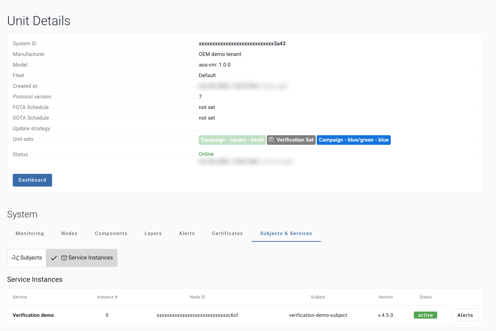
2. Test: tests/run_tests.sh
The built-in checks run first: they read the batch and the Units again (exactly this version, on every Unit, no crash) and watch the version for 60 s (late failure, restarts). Then your tests, from tests/your_tests.sh when you add it (Your tests), in a step of their own, with no secret. Exit 0 when every check passed, 1 when a check failed, 3 when AosCloud could not be read or a test Unit is offline: neither decides anything. It writes report/report.html and report/junit.xml; the job keeps them: open the run page → Artifacts → verification-report.
3. Decide: verify_batch.py decide --approve or --reject
It reads the batch once more, refuses unless the state is Waiting_validation (UI: Waiting verification), prints the architectures it decides (all of the batch), and sends one call, with no retry:
PATCH verification-batch/{batch_id}/with[{"architecture": "amd64", "is_approved": true}]: approve or reject
If your test Units do not cover every architecture of the batch, pass --arch for the ones you tested.
Approved: the batch becomes Valid (Verified in the UI): the version passed the gate, and it goes on to the fleet through your normal rollout. Rejected: Invalid, and it stops here.
| Approved | Rejected |
|---|---|
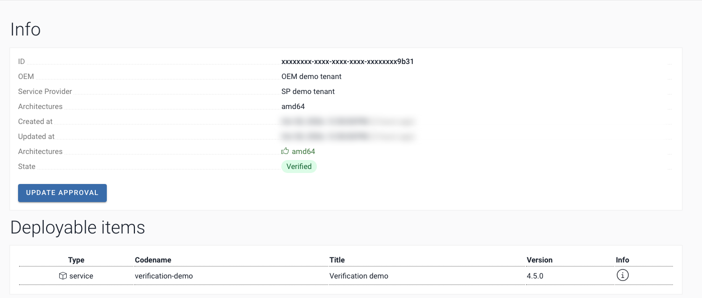 | 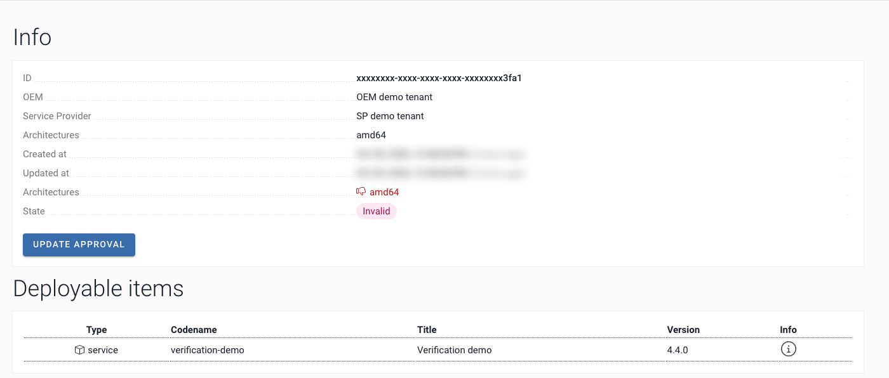 |
Next
- Your tests: what
tests/run_tests.shchecks, the report, and how to add your own tests- Example checks: 12 scenarios we ran on production, with the code
- API reference with examples: every call, with
curl, sample responses and errors- FAQ and tips: decisions, running it, connection, security
Start it by itself: the watch
Copy this file to .github/workflows/watch-verification.yml on the default branch: GitHub runs a schedule only from there. It needs three settings, from Parameters:
- The variable
AOS_API_URL. - The secret
AOS_SERVICE_ID: a secret, so that GitHub masks it in the log. - The secrets
AOS_USER_PEMandAOS_ROOT_CA_PEM, in the environmentaos-verification.
AOS_TEST_UNITS is no longer required: the job takes the Units from AosCloud.
# Ask AosCloud on a schedule whether a new version waits on the Verification Set, and start one verification run for it.
# AosCloud sends no notification to a pipeline, so this job asks; nobody has to press anything.
name: watch-verification
on:
schedule:
# Every 10 minutes. Use */5 if you need it faster: GitHub's minimum is 5, and it is not exact.
- cron: "*/10 * * * *"
workflow_dispatch:
concurrency:
group: watch-verification
cancel-in-progress: false
permissions:
actions: write
contents: read
jobs:
watch:
runs-on: ubuntu-latest
timeout-minutes: 10
# the secrets live in this environment; required reviewers on it would stop every run of this job (see the FAQ)
environment: aos-verification
steps:
- uses: actions/checkout@v4
with:
persist-credentials: false
- uses: actions/setup-python@v5
with:
python-version: "3.12"
- name: Install requests
run: python -m pip install requests==2.32.3
# The only step with the private key. It reads AosCloud, and it deletes the key when it ends.
- name: 0. Ask AosCloud for a waiting batch
id: discover
env:
AOS_API_URL: ${{ vars.AOS_API_URL }}
SERVICE_ID: ${{ secrets.AOS_SERVICE_ID }}
TEST_UNITS: ${{ vars.AOS_TEST_UNITS }}
USER_PEM: ${{ secrets.AOS_USER_PEM }}
ROOT_CA: ${{ secrets.AOS_ROOT_CA_PEM }}
run: |
if [ -z "$USER_PEM" ] || [ -z "$ROOT_CA" ]; then
echo "::error::AOS_USER_PEM or AOS_ROOT_CA_PEM is empty: put them in the environment aos-verification"
exit 1
fi
units=()
set -f
for unit in $TEST_UNITS; do units+=(--unit "$unit"); done
set +f
dir="$RUNNER_TEMP/aos" && mkdir -p "$dir" && chmod 700 "$dir"
trap 'rm -rf "$dir"' EXIT
(umask 077 && printf '%s\n' "$USER_PEM" > "$dir/user.pem" && printf '%s\n' "$ROOT_CA" > "$dir/aos-root-ca.crt")
export AOS_CERT="$dir/user.pem" AOS_CA="$dir/aos-root-ca.crt"
python verify_batch.py discover "${units[@]}"
# No key here. A run with this batch in its title, in any state, means the batch was handled: a run that
# timed out is not repeated every 10 minutes. Start it again by hand, with the version.
- name: Start one verification run for the batch
if: steps.discover.outputs.batch_id != ''
env:
GH_TOKEN: ${{ github.token }}
GH_REPO: ${{ github.repository }}
BATCH_ID: ${{ steps.discover.outputs.batch_id }}
VERSION: ${{ steps.discover.outputs.version }}
UNITS: ${{ steps.discover.outputs.units }}
run: |
runs=$(gh run list --workflow verify-release.yml --limit 200 --json displayTitle,status)
seen=$(jq -r --arg batch "$BATCH_ID" --arg version "$VERSION" '
[.[] | (.displayTitle | split(" ")) as $t
| select($t[1] == $batch or ($t[1] == "manual" and $t[2] == $version)) | .status] | first // empty' <<<"$runs")
if [ -n "$seen" ]; then
echo "batch $BATCH_ID, version $VERSION already has a run ($seen): nothing to start"
exit 0
fi
echo "starting verify-release for batch $BATCH_ID, version $VERSION, Units $UNITS"
gh workflow run verify-release.yml --ref "$GITHUB_REF_NAME" -f version="$VERSION" -f batch_id="$BATCH_ID" -f units="$UNITS"To start the verification right after an upload in the same workflow, call verify-release.yml from it, as in examples/release-caller.yml. You can use both.
Parameters
Create the environment aos-verification, put the secrets there, and add required reviewers if you want a person to confirm (repository Settings → Environments). The variables go in Settings → Secrets and variables → Actions.
| Name | Kind | Value |
|---|---|---|
AOS_API_URL | variable | https://api.aoscloud.io:10000/api/v11, or your API host |
AOS_USER_PEM | secret | one PEM file with the SP user certificate, the intermediate certificates and the key (see below) |
AOS_ROOT_CA_PEM | secret | the AosEdge root CA file aos-root-ca.crt (from aos-keys, see below; it is not secret) |
AOS_SERVICE_ID | secret | your Service id; it is not secret, but GitHub masks a secret in the log |
AOS_TEST_UNITS | variable | optional: test only these Units of the Verification Set; ids separated by spaces. A Unit you leave out is not checked. The job stops if one is outside the Set, or if an architecture of the batch has none |
AOS_WATCH_SECONDS | variable | how long the built-in checks watch the version on the test Units; default 60, 0 turns the watch off. See Example checks |
AOS_WAIT_TIMEOUT | variable | seconds to wait for the version on the Units; default 1800. The job stops after 60 minutes |
version | workflow input | the version to verify; to start the job by hand, this is the only input you need |
service_id, batch_id, units | workflow inputs | optional: the Service (default AOS_SERVICE_ID), the batch (default found by the version), the test Units, separated by spaces |
Your SP user certificate is a .p12 that aos-keys saved under ~/.aos/security/ (one per AosCloud and role; find ~/.aos/security -name "*.p12" lists them). Put the path of the SP one of your AosCloud into AOS_P12, as in Run it from your terminal, step 3. .p12 is a password-protected bundle; Python requests and curl need PEM files. Turn it into one PEM file that holds the certificate, the intermediate certificates and the key. Do not add -clcerts: without the intermediate certificates AosCloud refuses the connection with unknown ca. Store the file as the secret, and delete it. Press Enter if you are asked for the password of the file:
openssl pkcs12 -in "$AOS_P12" -nodes -out user.pemgh secret set AOS_USER_PEM --env aos-verification < user.pem && rm user.pemThe AosEdge root CA comes with aos-keys, in the folder where the AosEdge docs install the tools: ~/.aos/venv, file aos_keys/files/1rootCA.crt (CN AosEdge Root CA). Copy it as aos-root-ca.crt:
cp "$(~/.aos/venv/bin/python3 -c 'import aos_keys, pathlib; print(pathlib.Path(aos_keys.__file__).parent / "files" / "1rootCA.crt")')" aos-root-ca.crt
gh secret set AOS_ROOT_CA_PEM --env aos-verification < aos-root-ca.crtSecurity
The certificate secret holds the private key of your SP user. The job reads it from the environment aos-verification and writes it to a folder of the runner that only the job can read, only for the steps that call AosCloud: the watch's discover step, wait, the built-in checks and the decision. Your tests (tests/your_tests.sh) run in a step of their own, with no secret and no key file. Each step deletes the file when it ends. The job masks the batch and Unit ids in its log; what stays visible matters in a public repository. More: FAQ, Security.
Next → Your tests
Your tests
This page says what tests/run_tests.sh checks, what its report shows, how to add your own tests, and how to check the example itself.
What tests/run_tests.sh does
It runs after wait, with the values you exported (SERVICE_ID, VERSION, BATCH, UNIT_ID; in the job they come from the workflow), and takes no arguments.
The built-in checks, read-only, against AosCloud:
Check What it checks A1 the batch holds exactly this Service and version, and still waits B1 the version is installed and active on every test Unit C2 no instance of the version failed C3/C4 the watch: every 60 s for WATCH_SECONDS(default 60,0= off), the version still runs on every Unit- Your tests, from
tests/your_tests.sh, when the file exists. - The report:
report/report.htmlandreport/junit.xml. In the job: the run page → Artifacts → verification-report.
Exit 0 approves the version. Exit 1 (a check failed) rejects it. Exit 2 means a value is missing. Exit 3 means AosCloud could not be read or a test Unit is offline: nothing is decided, because neither says anything about the version.
Add your own tests
Start from the example. It has three tests that need your values, so they fail until you change them:
cp tests/your_tests.sh.example tests/your_tests.shOne line per test, with check <name> <command>: your test-bench script, a pytest suite, an HTTP check against a Unit:
check bench_suite ./bench/run_suite.sh --version "$VERSION"
check acceptance python -m pytest -q acceptance/
check health curl -fsS --max-time 10 "http://$UNIT_HOST:8080/health"The rule: print one line per test, PASS <name> or FAIL <name>: <why>, and exit 0 only when every test passed. tests/run_tests.sh puts these lines into the report, in their own section. Your tests get SERVICE_ID, VERSION, BATCH_ID and UNIT_ID (or AOS_TEST_UNITS) in their environment, but not AOS_CERT; in the job they run in a step with no secret. An HTTP check needs a network path from the runner to the test Unit.
Examples of checks for the 12 scenarios we ran on production: Example checks.
Check the example itself
tests/test_verify_batch.py runs verify_batch.py against a small in-memory AosCloud, with no network: discover (the highest version, stale batches, the Units in both lists, --dry-run), check, status, wait, a version that failed or is still starting, a timeout, paging through the batches, errors that stop at once (HTTP 4xx, TLS, a missing setting, no test Units, any unexpected error) and outages that are retried, approve, reject, --arch, a decided batch, a batch with no architectures, HTTP 5xx after the decision, an empty answer, and a lost answer. With bash, it also runs tests/run_tests.sh (the built-in checks, the watch, your tests, the report, the exit codes) and steps of the workflows: the job never ends green without a decision, stops on an empty secret, and deletes the key; the watch, with a stand-in for gh, starts one run per batch.
pip install pytest requestspython -m pytest -qYou should see 164 passed. Without bash (plain Windows), the 48 tests that use bash are skipped.
Next → Example checks
Example checks
12 scenarios we ran on production AosCloud 6.1 (28–30.10.2026), and step ⓪, the watch. Use them as a starting point if you have no tests yet. Most are already built into verify_batch.py and tests/run_tests.sh; the rest are a few lines in tests/your_tests.sh.
What runs by default
bash tests/run_tests.sh, after wait, runs the built-in checks A1, B1, C2 and the watch (C3/C4, 60 s) with no setup, then your tests if tests/your_tests.sh exists. Each check is one row in report/report.html; the report ends with a "Scenarios covered" table that says how each scenario was covered in that run. The commands below run as they are in the terminal of Run it from your terminal, after its step 4 (SERVICE_ID, UNIT_ID, VERSION) and, from C1 on, step 7 (BATCH).
| # | Scenario | What can go wrong | Covered by | Row in the report | Result on production |
|---|---|---|---|---|---|
| ⓪ | Found by the watch | nobody starts the job, or it starts on an old batch | discover: the highest version, Units from the Verification Set | Scenarios covered: batch …, version …, Units from the Verification Set | read-only on production and on staging, 04.11: right batch, stale ones left alone. The scheduled watch ran only against a mock so far |
| A1 | Exactly this Service and version | a decision on the wrong batch | wait, then the built-in checks read it again | Built-in checks: A1 | seen on production, 30.10: the batch of the uploaded version found |
| A2 | Upload processed | the bundle is refused, and nobody notices | aos-signer upload output; SP UI Deployment bundles; wait says no batch yet | Scenarios covered: by wait | Done: seen on production, 30.10; Error with the reason: seen on production, 28.10 |
| A3 | Same version uploaded again | a decision on an old version | wait: no batch, exit 2, nothing decided | Scenarios covered: by wait | seen on production, 28.10 |
| A4 | Evidence for every release | nobody can say later why a version was approved | the report, junit.xml, the job log, the batch in the UI | the report itself | seen on production, 30.10: batch Verified in the UI |
| B1 | On every listed Unit | approved before the version runs everywhere | wait, then the built-in checks read it again | Built-in checks: B1 | seen on production, 30.10: active on the test Unit about 15 s after the upload |
| B2 | A Unit that never gets it | approved while half of the Units never got it | wait times out, exit 2, no decision | Scenarios covered: by wait | seen on production, 29.10 |
| C1 | The Service's own tests | the version runs but does not work | tests/your_tests.sh | Your tests | seen on production, 30.10: the sample checks passed |
| C2 | Crash on start | a version that does not start is approved | wait exit 1 → reject; the built-in checks read it again | Built-in checks: C2 | seen on production, 29.10 |
| C3 | Late failure | the version fails minutes after the tests | the watch, on by default (60 s) | Built-in checks: C3/C4 | seen on production, 29.10 |
| C4 | Restarts and memory | the version keeps restarting | the watch; a restart check in tests/your_tests.sh | Built-in checks: C3/C4; Your tests | seen on production, 29.10 |
| E1 | Bad configuration | a wrong setting ships with good code | a config test in tests/your_tests.sh | Your tests | seen on production, 29.10 |
| E2 | Recovery: the fixed version | the fix skips the gate | upload the fix as a new version; the same steps approve it | the report of the fixed version | seen on production, 29.10 |
⓪. Found by the watch
What it checks. The job starts by itself, for the right batch, on the right Units.
How. discover lists the batches of your Service, takes the highest version if its batch waits, and takes the Units that are in the Verification Set and have the Service. It only reads.
python verify_batch.py discover --dry-runWhat you see. One JSON line, or no waiting batch. In the report, Scenarios covered: "found by the watch: batch …, version …, Units from the Verification Set".
The decision. None here. With no test Unit: exit 2, and nothing starts.
A1. Exactly this Service and version
What it checks. The batch holds exactly the Service and the version you uploaded, and it still waits.
How. wait takes only the batch whose item has your Service id and your version. The built-in checks read the batch again.
python verify_batch.py status --service-id "$SERVICE_ID" --version "$VERSION" --batch-id "$BATCH" --unit "$UNIT_ID"What you see. In the report, Built-in checks: A1 exactly this Service and version PASS.
The decision. No matching batch: wait decides nothing (exit 2). It never decides on another batch.
A2. Upload processed
What it checks. AosCloud accepted the bundle and created a batch.
How. Read the end of the upload output. In the SP UI, Deployment bundles shows Done or Error with the reason.
aos-signer uploadWhat you see. Deployment bundle successfully uploaded!. While AosCloud still processes the bundle, wait prints no batch yet for <version>, waiting.
The decision. Error: no batch, so wait times out with exit 2 and decides nothing. Read the reason in the UI.
A3. Same version uploaded again
What it checks. A version number that already exists is not decided again.
How. AosCloud refuses the upload (already exists), so there is no new batch. The old batch is already decided, and wait does not touch it.
What you see. wait prints no batch yet for <version>, waiting, then timed out, or batch … is no longer Waiting_validation: nothing to decide.
The decision. Exit 2, nothing sent. Upload the change as a new version.
A4. Evidence for every release
What it checks. You can show later what was checked and who approved.
How. tests/run_tests.sh writes report/report.html and report/junit.xml; the job keeps them as the artifact verification-report. The job log holds the batch id, the Unit states and the decision. The batch keeps its state in the UI (SP → Verification batches). GitHub deletes artifacts and logs after the retention period of your repository (Settings → Actions → General): keep a copy if you need it longer.
What you see. The report: the verdict at the top, one row per check. In the UI the batch shows Verified or Invalid.
The decision. None; this is the record of the decision.
B1. On every listed Unit
What it checks. The version runs on every test Unit before the checks go on.
How. In the job, the Units come from AosCloud. In the terminal, or to override them: one --unit per test Unit (in the job: AOS_TEST_UNITS, separated by spaces; in the terminal: AOS_TEST_UNITS instead of UNIT_ID). wait waits for each; the built-in checks read each again.
python verify_batch.py check --service-id "$SERVICE_ID" --unit "$UNIT_ID"What you see. wait prints batch …: {'…': 'installed'}; the report: B1 on every listed Unit PASS, "version … active on 1 of 1 Units".
The decision. Exit 0 only when the version is active on every Unit; then the checks run.
B2. A Unit that never gets it
What it checks. No decision while a Unit is offline or stuck.
How. wait stops after --timeout (in the job: AOS_WAIT_TIMEOUT, default 1800 s).
What you see. The last Unit states, for example {'…': 'installed', '…': 'waiting'}, then timed out after 1800 s: decide nothing. For an offline Unit: Unit … is offline: what AosCloud shows for it is old, so it does not count, even if AosCloud still shows the version active.
The decision. Exit 2, or exit 3 if a Unit is offline; nothing sent, and the batch keeps waiting. Bring the Unit online and run it again.
C1. The Service's own tests
What it checks. The new version works on the real Unit.
How. Your tests in tests/your_tests.sh, one line each. Start from the example (Your tests):
cp tests/your_tests.sh.example tests/your_tests.shA test is one line in that file, for example:
check health curl -fsS --max-time 10 "http://$UNIT_HOST:8080/health"Then run everything:
bash tests/run_tests.shWhat you see. One PASS or FAIL line per test, in the section Your tests of the report.
The decision. Every check passed: approve. Any check failed: reject.
python verify_batch.py decide --batch-id "$BATCH" --approveC2. Crash on start
What it checks. A version that does not start is rejected without a person.
How. AosCloud reports the instance of the new version as failed: wait exits 1, and the built-in checks read it again.
What you see. batch …: {'…': 'failed'}, then the batch id; in the report C2 no crash on start FAIL, with the error AosCloud gives.
The decision. Reject, without your tests.
python verify_batch.py decide --batch-id "$BATCH" --rejectC3. Late failure
What it checks. The version still runs some time after it started.
How. The watch, on by default: every 60 s for WATCH_SECONDS (default 60) it runs verify_batch.py wait again with --timeout 60 on every Unit. To watch longer:
WATCH_SECONDS=180 bash tests/run_tests.shIn the job, set the variable AOS_WATCH_SECONDS (0 turns it off). The watch reads the Units from AosCloud, so the step of the built-in checks has the certificate; your tests run in another step, with no secret.
What you see. PASS C3/C4 still running, or FAIL C3/C4: "the version stopped running in round … of …".
The decision. A failure in any round rejects the version. If AosCloud cannot be reached or a Unit goes offline, nothing is decided.
C4. Restarts and memory
What it checks. The version does not keep crashing or running out of memory.
How. When AosCloud reports the instance as failed, wait, the built-in C2 and the watch see it. A version that is killed and restarted between two rounds can look fine: add a test of your own to tests/your_tests.sh, for example the uptime that your Service reports:
uptime_ok() { [ "$(curl -fsS --max-time 10 "http://$UNIT_HOST:8080/uptime")" -ge 60 ]; }
check no_restarts uptime_okWhat you see. PASS no_restarts, or FAIL no_restarts, in Your tests.
The decision. Reject, even when the other checks pass.
E1. Bad configuration
What it checks. The settings that ship with the version are the ones you expect.
How. A config test in tests/your_tests.sh: ask the Service which settings it loaded, and compare.
config_ok() { curl -fsS --max-time 10 "http://$UNIT_HOST:8080/config" | grep -q '"feature_mode": *"normal"'; }
check config_loaded config_okWhat you see. PASS config_loaded, or FAIL config_loaded, in Your tests.
The decision. Reject. The code may be fine; fix the setting and upload a new version.
E2. Recovery: the fixed version
What it checks. The fix goes through the same gate as every other version.
How. Upload the fix with a new version number (higher than the rejected one), set VERSION to it, and repeat steps 6 to 9 of Run it from your terminal. In GitHub the upload starts the same job.
aos-signer uploadWhat you see. The same steps as for any version: wait ends with the batch id, the report says PASS → approve, batch …: approved, now Valid.
The decision. Approve: the batch shows Verified, and the Unit runs the fixed version.
Two more scenarios, a resource conflict and other Services on the same Unit, need AosCloud 6.2; they are not part of this example.
Next → API reference
AosCloud API reference, with examples
This page lists every AosCloud API call that the job and the prerequisites use, each with a curl example and a short sample response. Start with the README if you have not set up the job yet.
Before you call the API
- Base URL:
$AOS_API_URL=https://api.aoscloud.io:10000/api/v11(or your API host), API v11.- Mutual TLS: your user certificate is the client certificate, and the server is checked against the AosEdge root CA file
aos-root-ca.crt. It comes withaos-keys, in the folder where the AosEdge docs install the tools:~/.aos/venv, fileaos_keys/files/1rootCA.crt; thecpline below copies it. There is no token and no password.- The role of the certificate decides what you may do: SP (Service Provider) or OEM.
- The Swagger links open the official reference. Your browser asks for your certificate first.
One PEM file with the certificate, the intermediate certificates and the key, from your SP
.p12, whichaos-keyssaves under~/.aos/security/(find ~/.aos/security -name "*.p12"; keep its path inAOS_P12, as in Run it from your terminal, step 3)..p12is a password-protected bundle; Pythonrequestsandcurlneed PEM files (no-clcerts: without the intermediate certificates the server answersunknown ca). Press Enter if you are asked for a password:openssl pkcs12 -in "$AOS_P12" -nodes -out user.pem cp "$(~/.aos/venv/bin/python3 -c 'import aos_keys, pathlib; print(pathlib.Path(aos_keys.__file__).parent / "files" / "1rootCA.crt")')" aos-root-ca.crt export AOS_CERT=$PWD/user.pem AOS_CA=$PWD/aos-root-ca.crt export AOS_API_URL=https://api.aoscloud.io:10000/api/v11
Every example uses curl -sS --cert "$AOS_CERT" --cacert "$AOS_CA". The ids in the samples are placeholders such as <batch id>, and the answers show only the fields the job reads.
Errors you can meet
| Code | When | What to do |
|---|---|---|
| TLS error, before any HTTP code | a wrong or missing certificate, or a PEM without the intermediate CAs | make the PEM again without -clcerts; check AOS_CERT and AOS_CA |
| 403 | the wrong role (for example an SP certificate on unit-sets/) | use the certificate of the role named for the call |
| 404 | the id does not exist, or your account cannot see it | check the id; Units and batches are per tenant |
| 405 | the decision is not allowed for this certificate or batch | see Approve or reject |
| 400, 422 | the body is wrong: a missing field, a wrong type | compare with the body shown for the call |
| 5xx | an error inside AosCloud | wait tries again; after a decision, look at the batch in the UI |
Calls of the job
Find the batch
Lists the newest Verification batches, so the job can find the one of your Service and version. GET verification-batch/ · SP · read · Swagger: verification_batch_list
curl -sS --cert "$AOS_CERT" --cacert "$AOS_CA" "$AOS_API_URL/verification-batch/?ordering=-created_at&limit=50&offset=0"{"total": 1, "offset": 0, "items": [
{"id": "<batch id>", "state": "Waiting_validation", "architectures": ["amd64"],
"update_items": [{"identity_id": "<service id>", "version": "4.6.0", "codename": "my-service"}]}]}The job reads the pages (offset 0, 50, 100, …) up to total, and takes the batch whose update_items[].identity_id is your Service id and whose version is the uploaded version. It prefers a batch in Waiting_validation, and stops reading once it finds one. There is one batch per uploaded version.
discover reads all the pages, and takes a batch only if its version is the highest of your Service. Filter on your side: AosCloud ignores state= and created_at__gte= here, and answers 200 with every batch.
Read the batch
Reads one batch again, to check that it still waits for a decision. GET verification-batch/{batch_id}/ · SP · read · Swagger: verification_batch_read
curl -sS --cert "$AOS_CERT" --cacert "$AOS_CA" "$AOS_API_URL/verification-batch/$BATCH_ID/"{"id": "<batch id>", "state": "Waiting_validation", "architectures": ["amd64"], "approval_states": null}state is one of Waiting_validation (UI: Waiting verification), Valid (UI: Verified), Invalid, Partially_validated. Error: 404 for an unknown id.
The Units of the Verification Set
The job takes the test Units from these two calls, with the SP certificate alone. A test Unit has to be in both.
GET verification-batch/{batch_id}/statistics/ · SP · read · Swagger: verification_batch_statistics
curl -sS --cert "$AOS_CERT" --cacert "$AOS_CA" "$AOS_API_URL/verification-batch/$BATCH_ID/statistics/"{"batch_id": "<batch id>", "sub_batches": [
{"architecture": "amd64", "verification_set": {"count": 1, "unit_ids": ["<unit id>"]}}]}The job reads only verification_set: the Units of the Verification Set, per architecture. It does not say whether a Unit has your Service. The job never reads installed: on AosCloud 6.1 its count stays 0 after an install.
GET services/{service_id}/units/ · SP · read · Swagger: services_units_list
curl -sS --cert "$AOS_CERT" --cacert "$AOS_CA" "$AOS_API_URL/services/$SERVICE_ID/units/?limit=50&offset=0"{"total": 1, "offset": 0, "items": [{"id": "<unit id>", "system_uid": "<system uid>", "subjects": ["<subject id>"]}]}The Units linked to your Service through a Subject, whether they are in the Set or not. An architecture of the batch with no Unit in both lists stops the job with no decision: no test Unit for arm64.
Is the Unit online
AosCloud keeps the last state of a Unit that went offline, even an active instance, so the job asks this first. GET units/{unit_id}/ · SP · read · Swagger: units_read
curl -sS --cert "$AOS_CERT" --cacert "$AOS_CA" "$AOS_API_URL/units/$UNIT_ID/"{"id": "<unit id>", "status": "provisioned", "online_status": "Online", "last_online_changed_at": "2026-11-04T10:01:58+00:00"}Only online_status Online counts. An offline Unit is neither ready nor failed: the job waits, and at the timeout it decides nothing.
Read the version on a Unit
Shows which version of your Service a test Unit has installed, and whether it runs. GET units/{unit_id}/subjects-services/{service_id}/ · SP · read · Swagger: units_subjects_services_read
curl -sS --cert "$AOS_CERT" --cacert "$AOS_CA" "$AOS_API_URL/units/$UNIT_ID/subjects-services/$SERVICE_ID/"While the new version is on its way:
{"items": [{"service_versions": {
"pending_service_version_status": "pending", "pending_service_version": {"version": "4.6.0"},
"installed_service_version": {"version": "4.5.0"}}, "instances": [{"version": "4.5.0", "run_state": "active"}]}]}When it runs:
{"items": [{"service_versions": {
"pending_service_version_status": "installed", "pending_service_version": null,
"installed_service_version": {"version": "4.6.0"}}, "instances": [{"version": "4.6.0", "run_state": "active"}]}]}The job counts a Unit as ready when installed_service_version is the new version and an instance of the new version has run_state active; an instance that is still starting is not ready yet. It counts a Unit as failed when an instance of the new version has run_state failed, or when pending_service_version_status is error, resource conflict or rejected. An empty items list means that the Unit is not linked to the Service through a Subject (prerequisite 2, steps 3 and 4).
Approve or reject
Records the decision for every architecture of the batch, or for the ones you name with --arch. The job sends it once, and only while the state is Waiting_validation. PATCH verification-batch/{batch_id}/ · SP · write · Swagger: verification_batch_approval
curl -sS --cert "$AOS_CERT" --cacert "$AOS_CA" -X PATCH -H 'Content-Type: application/json' \
-d '[{"architecture": "amd64", "is_approved": true}]' "$AOS_API_URL/verification-batch/$BATCH_ID/"Body: a list with one entry for each architecture in the batch's architectures (for example amd64, for an image built for any). true approves it, and false rejects it.
{"id": "<batch id>", "state": "Valid",
"approval_states": {"amd64": {"is_approved": true, "user_id": "<user id>", "updated_at": "2026-10-30T12:51:04Z"}}}After the call the state is Valid (all approved, shown as Verified in the UI), Invalid (one rejected), or Partially_validated (some architectures still open).
Answers and errors:
- A success with an empty body is still a success:
decideprintssentand exits 0. - 405: the decision is not allowed for this certificate or batch.
- 5xx: the decision may have been applied.
decideexits 3 and does not send it again: look at the batch in the UI. - 400 or 422: the body is not a list of
{architecture, is_approved}. verify_batch.pyreads the state first, and decides only a batch that isWaiting_validation. This check matters: AosCloud also accepts this call on a batch that is already decided, so a second call could turn an approve into a reject.
Calls of the prerequisites (once, or in the UI)
Create the Service
POST services/ · SP · write · Swagger: services_create
curl -sS --cert "$AOS_CERT" --cacert "$AOS_CA" -X POST -H 'Content-Type: application/json' \
-d '{"title": "My Service", "codename": "my-service", "default_quotas": {}}' "$AOS_API_URL/services/"{"id": "<service id>", "codename": "my-service"}The id is the Service id of the job.
Find the Service id
GET services/?search=<codename> · SP · read · Swagger: services_list
curl -sS --cert "$AOS_CERT" --cacert "$AOS_CA" "$AOS_API_URL/services/?search=my-service"{"total": 1, "offset": 0, "items": [{"id": "<service id>", "title": "My Service", "codename": "my-service"}]}search matches a part of the title or the codename: take the item whose codename is exactly yours.
Create the Verification Set
POST unit-sets/ · OEM · write · Swagger: unit_sets_create
curl -sS --cert "$AOS_CERT" --cacert "$AOS_CA" -X POST -H 'Content-Type: application/json' \
-d '{"title": "Verification Set", "is_validation_set": true, "fleet": "'"$FLEET_ID"'", "description": "test Units"}' \
"$AOS_API_URL/unit-sets/"{"id": "<unit set id>", "title": "Verification Set", "is_validation_set": true}Error: 403 with an SP certificate.
Add Units to the Verification Set
POST unit-sets/{unit_set_id}/units/ · OEM · write · Swagger: unit_sets_units_create
curl -sS --cert "$AOS_CERT" --cacert "$AOS_CA" -X POST -H 'Content-Type: application/json' \
-d '{"system_uids": ["<system uid>"]}' "$AOS_API_URL/unit-sets/$UNIT_SET_ID/units/"The body takes the System UIDs of the Units, not their ids.
Find a Unit id
The job needs the id of each test Unit, not its System UID. GET units/?system_uid=<system uid> · OEM · read · Swagger: units_list
curl -sS --cert "$AOS_CERT" --cacert "$AOS_CA" "$AOS_API_URL/units/?system_uid=<system uid>"{"total": 1, "offset": 0, "items": [{"id": "<unit id>", "system_uid": "<system uid>"}]}Create the Subject
POST subjects/ · OEM · write · Swagger: subjects_create
curl -sS --cert "$AOS_CERT" --cacert "$AOS_CA" -X POST -H 'Content-Type: application/json' \
-d '{"label": "verification-subject", "is_group": true, "priority": 0}' "$AOS_API_URL/subjects/"{"id": "<subject id>", "label": "verification-subject", "is_group": true}Assign Units to the Subject
POST subjects/{subject_id}/units/ · OEM · write · Swagger: subjects_units_create
curl -sS --cert "$AOS_CERT" --cacert "$AOS_CA" -X POST -H 'Content-Type: application/json' \
-d '{"system_uids": ["<system uid>"]}' "$AOS_API_URL/subjects/$SUBJECT_ID/units/"Give the Service to the Subject
POST subjects/{subject_id}/services/ · OEM · write · Swagger: subjects_services_create
curl -sS --cert "$AOS_CERT" --cacert "$AOS_CA" -X POST -H 'Content-Type: application/json' \
-d '{"service_ids": ["'"$SERVICE_ID"'"]}' "$AOS_API_URL/subjects/$SUBJECT_ID/services/"More calls
Every call above is part of the public AosCloud API v11. The Swagger reference lists all the other calls.
Next → FAQ
FAQ and tips
Short answers for running the verification job day to day. For the setup, see the README; for the calls, see the API reference.
Decisions
Who may approve or reject? The Service Provider, with the SP certificate.
What if a test Unit never gets the version? wait times out with exit 2, or exit 3 if the Unit is offline, and the job decides nothing. An offline Unit does not count, even if AosCloud still shows the new version active: that state is old. The batch keeps waiting, with no time limit. Check that the Unit is online, in the Verification Set, and linked to the Service through the Subject (README, prerequisite 2). Then run the job again with workflow_dispatch, with the same version. The watch does not start a batch a second time.
Valid or Verified? They are the same. The API says Valid, and the UI shows Verified. Verified means the version passed the gate; it then goes on to the fleet through your normal rollout. A batch that waits is Waiting_validation in the API and Waiting verification in the UI.
What does the job never do?
- It never decides a batch twice.
- It never changes a batch that is already decided:
verify_batch.pyreads the state first, and decides only a batch that isWaiting_validation. - It never decides after a timed-out wait.
- It never retries the decision call. If the answer is lost, or AosCloud answers HTTP 5xx, it exits 3: look at the batch in the UI before you do anything else.
- It never ends green without a decision: any error in
waitstops the job.
The watch: timing and old batches
Why 10 minutes? It is a balance: a version waits about 10 minutes for the watch to find it, and the job does not run all the time. GitHub runs a schedule on a best-effort basis: a run can start late or be skipped, so the wait is sometimes longer. The chained start needs no schedule: your upload job calls the verification right after the upload, in the same workflow (examples/release-caller.yml). GitHub's minimum is 5 minutes. */5 in the cron line asks more often, but it does not make the schedule reliable. Every run costs runner time: at 10 minutes, about 4,300 minutes a month if each run counts as one minute. Check your plan if the repository is private. In a public repository GitHub turns a schedule off after 60 days without activity.
Why not instant? AosCloud 6.1 and 6.2 send no notification to a pipeline, so the job has to ask. A webhook would make it instant: that is a feature request for AosCloud. If the upload runs in the same workflow, the chained start begins right after it (examples/release-caller.yml).
What about old batches that keep waiting? They are ignored. AosCloud moves the Units on to the newest version, and never closes the older batch, so it waits for ever. The watch takes only the highest version of your Service, even if that one is already decided, and lists the others as stale, left alone. Decide them in the UI if you want the list clean.
A run timed out. Does the watch try again? No: when verify-release already has a run for the batch, in any state, the watch starts no other, so a broken Unit does not start a job every 10 minutes. That also holds for a run that was cancelled or died on the runner. Fix the cause, then start verify-release by hand with the version.
A new version arrives during the tests. The Units move on to it, so the older version stops running: its checks fail and its batch is rejected, even if it was good. The new version gets its own run. Nothing wrong gets approved.
Two runs for one version? It can happen: the watch does not see a chained run, because GitHub lists it under the calling workflow. If the watch asks during a chained run, the two queue, one after the other. The second finds the batch decided, stops with no longer Waiting_validation, sends nothing, and shows red. No harm is done.
Can a decision be overwritten? AosCloud accepts a decision on a batch that is already decided, and the last one wins. The job reads the state right before its one call, but the server has no lock: a person who decides in the UI in that same moment can be overwritten.
I want a person to confirm. Required reviewers on the environment aos-verification would stop the watch at every run, too. Keep the watch in an environment of its own, with the same secrets and no reviewers: change the environment: line of watch-verification.yml.
no test Unit for arm64. The batch needs a decision for an architecture that has no test Unit. The job will not approve what it did not test, so the watch run stays red and nothing starts until you add a Unit of that architecture to the Verification Set, or decide in the UI.
Running it
Where do I see the batch? SP UI → Verification batches. The job prints the batch id in its log.
I uploaded the same version again, and no batch appeared. A version can be uploaded only once. The bundle ends in Error ("Item version … already exists"), and no batch is created, so wait times out. Raise items[].version in config.yaml and upload again.
A broken version. A version that cannot start may restart a few times on the Unit before its instance is marked failed. wait then stops with exit 1 and prints the batch id, and the job rejects it without running your tests.
aos-signer prints my user name and e-mail. On sign and upload, aos-signer prints the user of the certificate (its common name, which holds your user name and e-mail). In CI, mask this line, or keep the job logs private.
Connection
The calls hang or fail with a TLS error. The runner needs outgoing TCP 10000 to the API host, without TLS inspection: a proxy or security product that decrypts TLS breaks mutual TLS. Ask your network team for a pass-through rule for <api host>:10000.
My certificate expires. A user certificate has an end date. Renew it before that date, convert the new .p12 (see the README), and replace the AOS_USER_PEM secret. Check the date with openssl x509 -in user.pem -noout -enddate.
unknown ca when connecting. The error reads tlsv1 alert unknown ca: the PEM file has no intermediate certificates. Make it again without -clcerts: openssl pkcs12 -in "$AOS_P12" -nodes -out user.pem. The file then holds the certificate, the intermediate certificates and the key. Replace the AOS_USER_PEM secret.
Can't open aos-user-sp.p12. You are not in the folder of the file. Put the full path into AOS_P12 and use it: openssl pkcs12 -in "$AOS_P12" -nodes -out user.pem. find ~/.aos/security -name "*.p12" lists your files.
Mac verify error: invalid password? A wrong password of the .p12 file. It is the file's password, not the one of your computer, and it is often empty: press Enter. MAC is the integrity check of the file.
ls prints an error such as --icons. Your shell has an alias for ls (eza, lsd). The steps use find, which no alias changes.
I have several certificates. aos-keys saves one .p12 per AosCloud and role, for example ~/.aos/security/aos-user-sp.p12 and ~/.aos/security/prod/aos-user-sp-prod.p12. Use the SP certificate of the AosCloud in AOS_API_URL. A wrong one ends in HTTP 401, HTTP 403 or a TLS error in verify_batch.py check.
We use a proxy. verify_batch.py (through requests) and curl honour HTTPS_PROXY and NO_PROXY. If the runner can reach the API host directly, add it to NO_PROXY; if the proxy is the only way out, it must pass port 10000 through without TLS inspection.
Security
What does a public run show? The job masks the batch, Unit and Service ids in its log. Two things stay visible: the run title carries the batch id, because the watch finds its runs by it; and the variable AOS_API_URL shows your API host. Keep the repository private if that matters.
The PEM secret holds the private key. Anyone who can run a workflow with this secret can act as your SP user. The job reads the secrets from the GitHub environment aos-verification: add required reviewers and protected branches there (GitHub offers required reviewers in a private repository only on its Enterprise plan; the call ends in HTTP 422 otherwise). The job writes the PEM to a folder of the runner that only it can read, only in the steps that call AosCloud (the discover step of the watch, wait, the built-in checks, the decision), and deletes it at the end of each. Your tests run in a step of their own, with no secret and no key file. Delete local copies of user.pem after you store the secret.
Next → back to the Overview